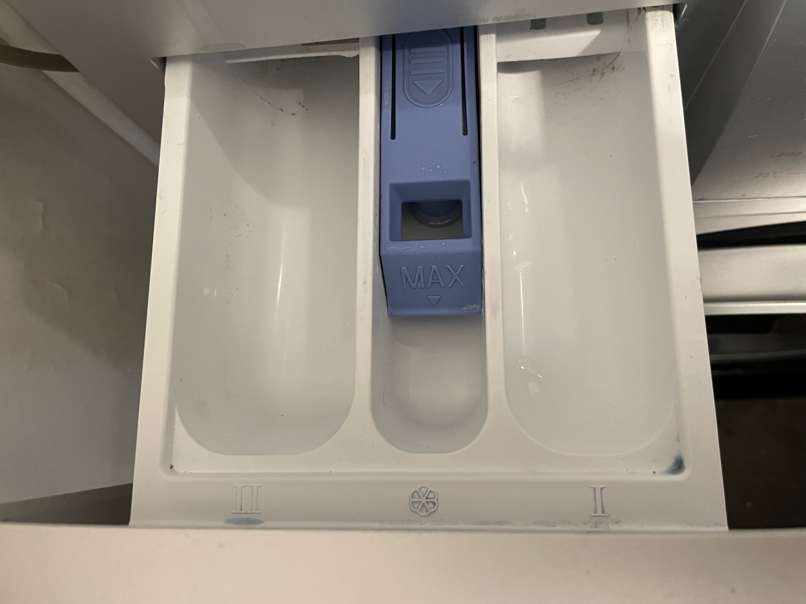
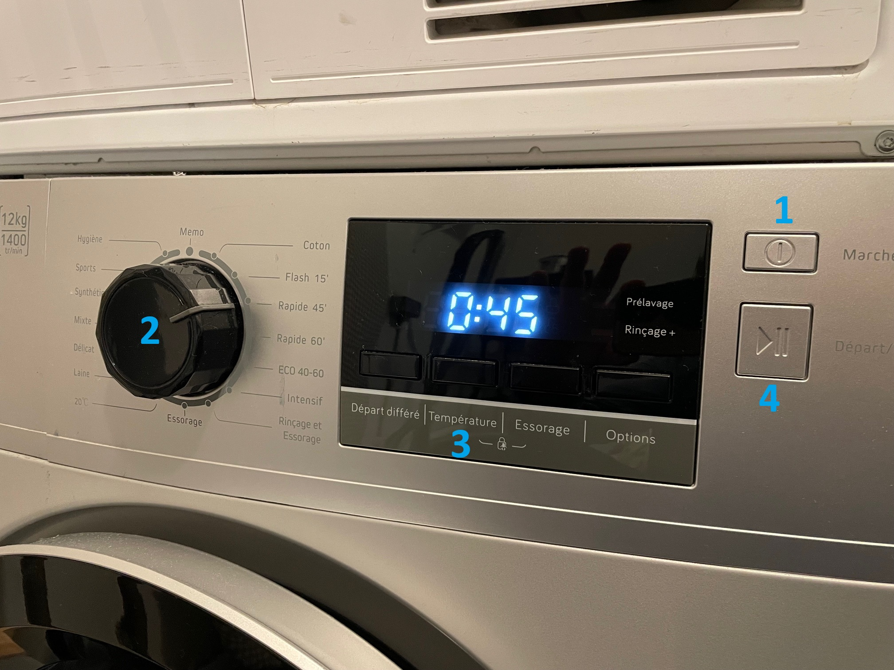

Washing Machine
Washing Machine short instructions.
Load the Machine
Open the washing machine door and place clothes inside.
Ensure all pockets are empty :-)
Do not overfill; leave enough space for clothes to move freely.
Add Detergent
II Pour the appropriate amount of detergent into the left detergent compartment.
❄️Use fabric softener if desired in the middle compartment.
Detergent compartments
Turn on the machine
Turn on the machine (1) .
The screen should light-up
Select Cycle
Choose the appropriate wash cycle (2) based on the fabric type.
Rapid 45' is a good starting point.
Select Temperature
Depending on the selected cycle, the Temperature button (3) proposes several possibilities.
This step is not mandatory.
Start the cycle
Close the door and press the Start (4) button..
The machine will play music to notify you when the cycle is finished.
Cycle selection (2) & Start button (4) ▶️